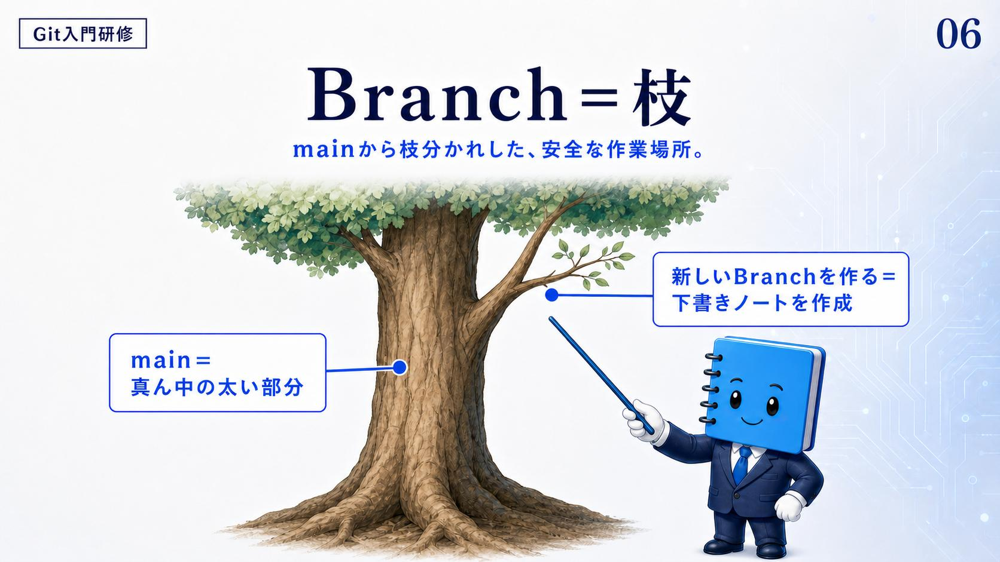
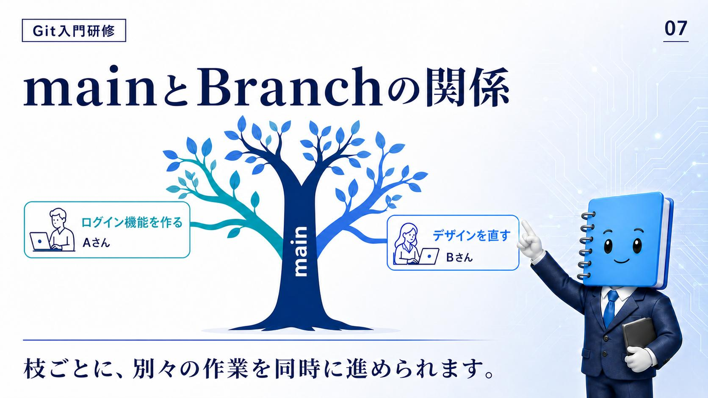
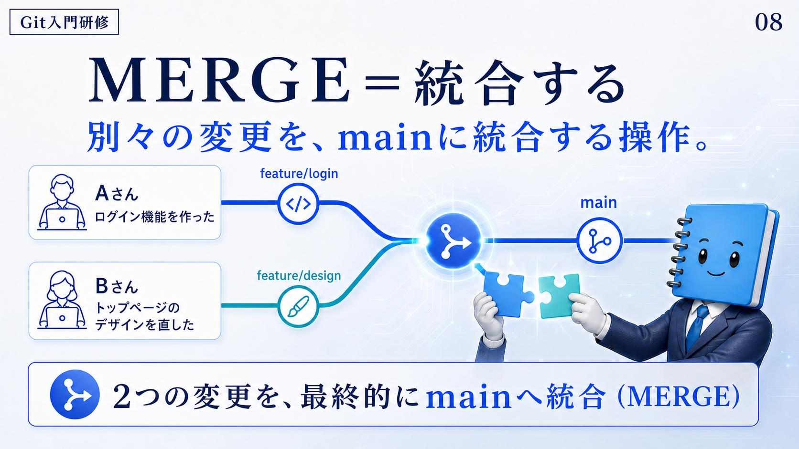

Branch ＝ 枝
資料は Branch を「枝」とだけ訳し、性格を一行で足す——main から枝分かれした、安全な作業場所。「安全な」が効いている。枝で何をしても、02 で守ると決めた本線は無傷のままだからだ。
スライドは1本の木で説明している。
main ＝ 真ん中の太い部分
幹。プロジェクトの本線。
新しい Branch を作る ＝ 下書きノートを作成
幹から伸びる枝。作りかけを置く場所。
「下書きノートを作成」という言い換えが、この回でいちばん持ち帰りやすい。清書（main）に直接書き込むのではなく、下書きを1冊増やしてそこで書く、という手続きになる。

確認
資料が Branch を「安全な作業場所」と呼ぶのは、そこで作業しているあいだ何が起きないからか。
- 幹にあたる本線が、その作業のせいで書き換わらない
- 作業中のファイルが自動で保存され、消えなくなる
- 他の人がその枝を見られなくなる
答え: A — 枝分かれした場所で書いているので、幹（main）はそのまま残る。
資料はこれを「下書きノートを作成」と言い換えている。清書には手を付けない、という意味になる。
main と Branch の関係
枝が1本ではなく複数あるとどうなるか。資料は2人を例に出す。
A さん
ログイン機能を作る。
B さん
デザインを直す。
2人はそれぞれ別の枝にいる。だからスライドの結論はこうなる——枝ごとに、別々の作業を同時に進められます。順番待ちが要らないのがブランチの効き目で、これがチーム開発で Git を使う直接の理由になる。

確認
A さんと B さんが別々の枝で作業できることの利点として、資料が示しているのはどれか。
- 2人の変更が自動的に同じ内容にそろう
- 2人のうち片方だけが main を書き換えられるようになる
- 片方の作業が終わるのを待たずに、両方を同時に進められる
答え: C — 枝が分かれているので、順番待ちが発生しない。
同時に進んだ2つの変更を最後にどうするかが、この次の話になる。
MERGE ＝ 統合する
同時に進めた変更は、いつか1つに戻さなければ意味がない。その操作が MERGE ＝ 統合する。資料の定義は「別々の変更を、main に統合する操作」。
スライドでは、さきほどの2人の枝に名前が付いている。
この2本が合流点で1本になり、main に入る。スライドの結びは「2つの変更を、最終的に main へ統合（MERGE）」。02 で見た「確認された完成形を置く場所」という main の性格と合わせて読むと、マージは完成したものだけを本線に入れる関所にあたる。

確認
feature/login と feature/design の2本について、資料が描いている行き先はどれか。
- それぞれが独立したまま、本線とは別に残り続ける
- 先に終わったほうだけが採用され、もう一方は捨てられる
- 合流して1本になり、最終的に main へ入る
答え: C — 2つの変更を最終的に main へ統合するのが MERGE。
どちらか一方を捨てるという話ではない。ただし、同じ場所を両方が触っていた場合には別の問題が起きる。
まとめ
Branch はmain から枝分かれした安全な作業場所。MERGE は別々の変更を main に統合する操作。
枝を分ければ同時に進められ、マージすれば1つに戻る。ここまでは1台のパソコンの中の話としても読める。次の回は場所の話——自分のパソコンと、チーム全員が集まるクラウド上の保管場所をどう行き来するか。